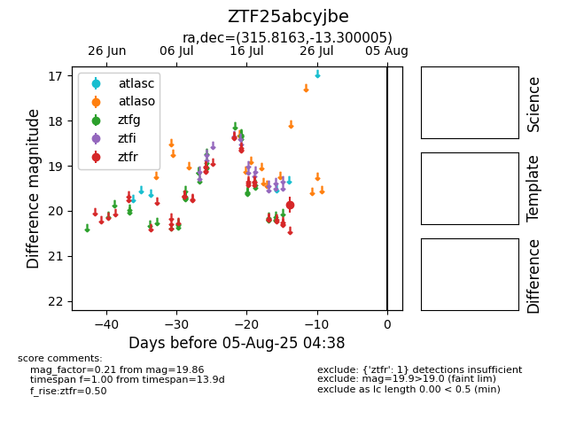

Target ZTF25abcyjbe at 2025-08-05 04:38, see:
FINK: fink-portal.org/ZTF25abcyjbe
Lasair: lasair-ztf.lsst.ac.uk/objects/ZTF25abcyjbe
ALeRCE: alerce.online/object/ZTF25abcyjbe
alt names
ZTF25abcyjbe (ztf,fink)
coordinates:
equatorial (ra, dec) = (315.8163,-13.30001)
galactic (l, b) = (35.5027,-35.17477)
photometry
last ztfr=19.86
1 ztfr detections
